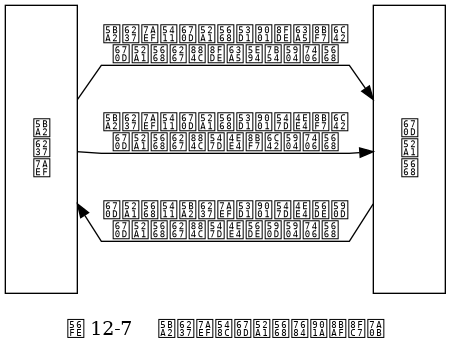

第 12 章： 事件¶
Redis 的文件事件处理器的四个组成部分。
![digraph {
label = "\n 图 12-1 文件事件处理器的四个组成部分";
rankdir = LR;
node [shape = box];
subgraph cluster_sockets {
style = dashed
label = "套接字";
c1 [label = "s1", shape = circle];
c2 [label = "s2", shape = circle];
other_client [label = "...", width = 1.1, shape = plaintext];
c3 [label = "sN", shape = circle];
}
io_multiplexing [label = "I\n/\nO\n多\n路\n复\n用\n程\n序"];
file_event_processor [label = "文\n件\n事\n件\n分\n派\n器"];
subgraph cluster_handlers {
style = dashed
label = "事件处理器";
write_handler [label = "命令请求处理器"];
read_handler [label = "命令回复处理器"];
connect_handler [label = "连接应答处理器"];
other_handlers [label = "...", width = 1.6];
}
c1 -> io_multiplexing;
c2 -> io_multiplexing;
other_client -> io_multiplexing [style = invis];
c3 -> io_multiplexing;
io_multiplexing -> file_event_processor;
file_event_processor -> write_handler;
file_event_processor -> read_handler;
file_event_processor -> connect_handler;
file_event_processor -> other_handlers;
}](_images/graphviz-3b46490c634d0f94c788351f738594695f1afd9b.png)
I/O 多路复用程序通过队列向文件事件分派器传送套接字的过程。
![digraph {
rankdir = LR;
node [shape = record];
label = "\n图 12-2 I/O 多路复用程序通过队列向文件事件分派器传送套接字";
//
subgraph cluster_io_multiplexing {
//style = dashed
label = "队列";
queue [label = " { 套接字 sN | 套接字 sN-1 | ... | 套接字 s3 | 套接字 s2 } "];
}
file_event_processor [label = "文\n件\n事\n件\n分\n派\n器"];
//
queue -> file_event_processor [label = "传送\n 套接字 s1", style = dashed];
}](_images/graphviz-9995e4f92f26eddbfc0fa2059164f3eaa540ae9e.png)
Redis 的 I/O 多路复用程序有多个 I/O 多路复用库可选。
![digraph {
label = "图 12-3 Redis 的 I/O 多路复用程序有多个 I/O 多路复用库实现可选";
node [shape = box];
io_multiplexing [label = "I/O 多路复用程序"];
subgraph cluster_imp {
style = dashed
label = "底层实现";
labelloc = "b";
kqueue [label = "kqueue"];
evport [label = "evport"];
epoll [label = "epoll"];
select [label = "select"];
}
//
edge [dir = back];
io_multiplexing -> select;
io_multiplexing -> epoll;
io_multiplexing -> evport;
io_multiplexing -> kqueue;
}](_images/graphviz-296c2b4629aaed62c118332d240341df892479c4.png)
客户端与服务器通过事件应答来进行通信的过程。

时间事件示例。
![digraph {
label = "\n图 12-8 用链表连接起来的三个时间事件";
rankdir = LR;
node [shape = record];
time_events [shape = plaintext];
te3 [label = "time_event | id\n3 | when\n1385877600030\n（2013年12月1日\n零时之后30毫秒） | timeProc\nhandler_3"];
te2 [label = "time_event | id\n2 | when\n1385877600000\n（2013年12月1日\n零时） | timeProc\nhandler_2"];
te1 [label = "time_event | id\n1 | when\n1385877600010\n（2013年12月1日\n零时之后10毫秒） | timeProc\nhandler_1"];
time_events -> te3 -> te2 -> te1;
}](_images/graphviz-a451a0ab5c59668d05874637949910271a5e87e0.png)
事件处理角度下的 Redis 服务器运行流程。
![digraph {
label = "\n图 12-10 事件处理角度下的服务器运行流程";
start_server [label = "启动服务器", shape = box];
server_close_or_not [label = "是否关闭服务器？", shape = diamond];
start_server -> server_close_or_not;
close_server [label = "关闭服务器", shape = box];
wait_for_file_event [label = "等待文件事件产生", shape = box];
handler_file_event [label = "处理已产生的文件事件", shape = box];
handler_time_event [label = "处理已达到的时间事件", shape = box];
wait_for_file_event -> handler_file_event -> handler_time_event;
//
server_close_or_not -> close_server [label = "是"];
server_close_or_not -> wait_for_file_event [label = "否"];
handler_time_event -> server_close_or_not [label = "开始新的事件循环"];
}](_images/graphviz-ac000ecd1a1f87ad60fafcada1436671ec65afce.png)
Redis 的文件事件处理器的四个组成部分。
I/O 多路复用程序通过队列向文件事件分派器传送套接字的过程。
Redis 的 I/O 多路复用程序有多个 I/O 多路复用库可选。
客户端与服务器通过事件应答来进行通信的过程。
时间事件示例。
事件处理角度下的 Redis 服务器运行流程。